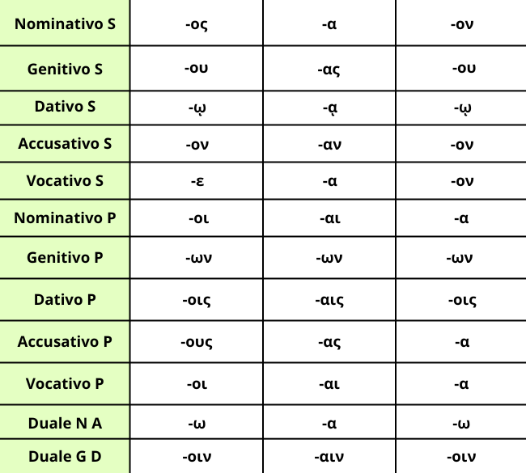

Gli aggettivi della prima classe a tre uscite seguono la prima e la seconda declinazione dei sostantivi, infatti le desinenze sono le stesse dei maschili e neutri della seconda declinazione e i femminili della prima declinazione, tranne per il genitivo plurale che al genere femminile non è perispomeno.
Un esempio di declinazione da maschile, femminile e neutro può essere fatto con l'aggettivo μέτριος:
Maschile: μέτριος, μετρίου, μετρίῳ, μέτριον, μέτριε, μετρίω, μέτριοι, μετρίων, μετρίοις, μετρίους, μέτριοι, μετρίοιν;
Femminile: μετρία, μετρίας, μετρίᾳ, μετρίαν, μετρία, μετρία, μέτριαι, μετρίων, μετρίαις, μετρίας, μέτριαι, μετρίαιν;
Neutro: μέτριον, μετρίου, μετρίῳ, μέτριον, μέτριον, μετρίω, μέτρια, μετρίων, μετρίοις, μέτρα, μέτρα, μετρίοιν;
Ci sono però alcuni aggettivi come καλός che nel paradigma al posto dell'α hanno la η, comunque rispecchiando i sostantivi femminili della prima declinazione. Ricordati bene quindi di controllare anche il paradigma, ovvero la parola insieme alle desinenze che trovi sul dizionario, presenti anche in quest'app.
Non c'è neanche da fare fatica per ricordarsi le desinenze: sono le stesse dei sostantivi della prima e seconda declinazione, perciò basta solo fare esercizio e li si potrà padroneggiare in pochissimo tempo.